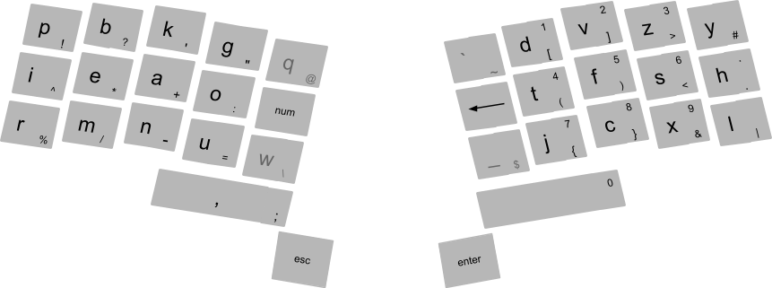

Comshell
1, Comshell
Comshell is a command based user interface;
command based user interfaces (using keyboard, voice, gesture) are faster, more convenient and more powerful than pointing based user interfaces (using mouse, touch, pen);
although touch interfaces can still be useful in simple limited applications; and for some special artistic applications, pen input remains the only choice;
unlike a general speech recognition process, voice commands are much simpler for a speech recognition engine to process, since it needs to match against a relatively small set of commands;
a headset with near range microphone can be used, to exclude far away sound sources; also it is better to put battery and bluetooth of the headset in a separate unit, that can be put in the pocket; this makes the headset lighter and safer;
for those who neither can use all their fingers, nor can talk, gesture based (2d) input can be implemented;

missing characters can be entered like this:
, two commas --> ;
, ; followed by comma --> .
, ; followed by c --> :
, ; folloed by n --> ::
, comma followed by add followed by comma --> +
, comma followed by add followed by space --> + followed by space
, comma followed by psi followed by space --> ψ followed by space
, __a --> A
, ab_cd__ followed by space --> AB_CD followed by space
Kinesis Advantage 2 keyboard
modal key_bindings;
modes (like normal mode and insert mode) must be visually distinctive;
press escape to go back to normal mode;
in normal mode we can:
, move the cursor to the next or previous characters or words
, move the cursor to the next or previous (or by entering the number directly to) lines (or table cells)
, move the cursor to the next or previous paragraphs
, start and end selection, then copy or cut
, paste
, undo, redo
, find
, enter insert mode
projects are looked for in "~/projects/" and all directories named "projects" on all disks; from this list, we can open projects (or switch to them if they are already open); also we can create new projects;
different views of the current project can be opened in separate tabs;
external projects (which can also be websites, pdf, etc) which are opened from inside the current project (not from projects list) will also be opened in separate tabs;
a panel at the left shows a tree view of the files in the project;
text files are opened in a text editor panel at the right;
directories with ".m" extension are opened in a panel at the right, showing thumbnails of the files in it;
we can go to the panel, and move between files in there (by typing their name), or create new files;
focus paragraph, ie auto scroll to reveal whole paragraph;
2, computers
in conventional digital circuits when the inputs change the outputs can have temporary incorrect values until they stabilize to correct values; so gates with memory, must be synchronized with a global clock signal; the period of clock signal is made long enough for the circuit to become stable;
this forces us to split long operations into several smaller ones which can be performed in successive clock cycles (a technique known as pipelining); otherwise the circuit would be slow and inefficient;
in addition the widely distributed clock signal takes a lot of power, and must run whether the circuit is receiving inputs or not;
the solution is to use rendezvous channels, in which sends and receives, block until the other side is ready;
initially all channels have default values (this is necessary to cope with feedbacks); then gates start to fetch their inputs from channels and compute their output values; and when their following gates are ready to receive it, they send it to the output channels; now the gate itself is ready to receive new values on its inputs;
cpu, memory, peripherals, this seems to be the only practical architecture for the hardware of computers; though universal memory technologies (like magneto_resistive random_access memory) if possible, could make things simpler;
cpu runs a sequence of simple computations called instructions (packages of 0 and 1), one by one;
programs usually do not run directly on a computer hardware, instead they run on a more sophisticated software machine (a virtual machine) called kernel;
Linux is an example; though one thing that i don't like about it (and indeed other Unix based operating systems) is that most things appear in the file system; i think the reason is to make it possible to do a lot of things using shell scripts instead of a proper programming language, and i think it's a bad idea;
compilers are special programs that obtain computer instructions from a program written in a language which is human readable and structured; this way the written program will be portable to different computer architectures;
Rust is a programming language which provides zero cost abstractions (eg a well designed type system, and functional programming techniques), and memory safety without garbage collection; thus there is absolutely no reason to write new software in C/C++;
3, Rust
Rust makes bad programming hard, and good programming fun;
Rust does not hide complexity, in fact it bolds it, so we can see it and avoid it;
evolution of C language:
, wrong approach:
classes (C++)
garbage collection:
, classes (Java, C#, ...)
, immutable data (Haskell)
, right approach: traits, move semantics (Rust)
shared mutability is the root of many complexities, especially in concurrent environments;
all references in Rust must either be unique or immutable;
any resource have exactly one owner which takes care of its resource deallocation;
owners can share their data by lending them to references; references must have a lifetime less than the owner;
owner can:
, control resource deallocation
, lend the resource:
, immutably (multiple refs)
, mutably (only on ref)
, hand over ownership (move)
owner can't:
, during borrow:
, mutate the resource
, mutably lend the resource
, during mutable borrow:
, access the resource
, lend the resource
reference can:
, access borrowed resource
, share (copy) an immutable borrow
mutable reference can:
, access and mutate resource
, hand over (move) the mutable borrow (mutable ref is moved by default)
scenarios that involve multiple refs or returning refs often require explicit lifetimes; so don't return refs, instead use mutable refs in inputs;
structs and enums containing refs must have explicit lifetimes (impl of these must use lifetimes too); so don't use them;
Rust have separate types for static and dynamic values; (str/String, fn/Fn)
functions can only access static environment; closures don't have this limitation; so when using them we might be more careful;
static data can be defined using only other static data;
arrays have a fixed size, so they can be implemented on stack; but are mutable, so unlike "str" they can't be static;
automatic referencing in method calls (auto_borrow for self);
Rust auto_dereferences variables when:
, making method calls on a reference
, passing a ref as a function argument (because the type signature for functions are mandatory)
you have to deref vars when:
, assigning to them without type annotation
, using overloaded operators
if x doesn't implement foo() but implements Deref then x.foo() --> x.deref().foo()
type system
types show us what we can do with the data (which operations are valid);
the class hierarchy design like in Java is problematic;
also the problem of covariance for generic types, has its root in this problem;
i think this is also the reason some prefer dynamic typing (another bad design) over static typing;
the right way is to use structs and traits (like in Rust and Go):
, structs are like final classes in Java, we use them to make object, but we can't inherit other classes from them;
, traits are like abstract classes in Java, we can inherit other classes from them, but we can't directly use them to make objects;
this way, all non_leaf classes will be abstract (traits), and all leaf classes will be final (structs);
tuples (heterogeneous, fixed size collection):
x = (1, "aaa")
named tuple: {i: 1, j: "aaa"}
access:
, destructuring
let (a, b) = (1, "aaa")
, dot notation
tuples: x.0 (literal number only)
named tuples: x.i
arrays (homogeneous, fixed sized collection):
indexing can be done at runtime because all elements have the same type;
vectors and hash tables (homogeneous, varying sized collection)
dot notation is used where we can destucture (tuples, structures);
double colon "::" is for namespacing;
4, functional reactive programming
imperative programming is done by procedurally changing stored values, it resembles the way CPU runs the instructions stored in memory;
imperative programming leads to unmaintainable code in large programs, and it makes writing parallel programs a cumbersome task;
functional reactive programming:
when the output channels of a function is empty and the input channels are full, the function consumes its inputs and fills its outputs with computed values;
initially all channels have default values, so feedbacks are possible;
functions just compute new data, they don't change anything outside of the function; but many computations need to mutate the data given to them, because the data is big and copying it would be inefficient;
one method as seen in languages like Haskell and Clojure is to use persistent data structures; in this method only the mutated part of data is computed and the rest of data is accessed through a reference to the original data; this may introduce some efficiency costs, but more importantly this method needs garbage collection;
another method is to use value semantics and copy_on_write, as in Swift; this method introduces some run_time cost because of reference counting; (it's actually a run_time solution)
the key to a real solution is move semantics (also known as uniqueness or linear types), as used in LinearML, Mercury and Rust; note that none of these languages need run_time garbage collection;
passing data across functions:
, copy (for small primitive data)
, borrow (immutable, lifetime is known at compile_time)
, counted reference (immutable, lifetime is unknown at compile_time)
, move (for linear type data, in_place mutability is possible)
, static data (like functions): no problem, share by reference
, dynamic data
, small data: move it, or share by copying
, big data: move (no sharing)
functional reactive programming allow us to program without the need to share big data;
keep related states in one place (to avoid copying big data);
a set of messages as input;
each kind of message changes one part of the state;
from "Henry G Baker, use_once variables and linear objects":
programming languages should have use_once variables in addition to the usual multiple_use variables; use_once variables are bound to linear (unshared, unaliased, or singly_referenced) objects; linear objects are cheap to access and manage, because they require no synchronization or tracing garbage collection; linear objects can elegantly and efficiently solve otherwise difficult problems of functional systems, eg in_place updating and the efficient initialization of functional objects;
a use_once variable must be dynamically referenced exactly once within its scope; unreferenced use_once variables must be explicitly killed, and multiply_referenced use_once variables must be explicitly copied; use_once variables are bound only to linear objects, which may reference other linear or non_linear objects; non_linear objects can reference other non_linear objects, but can reference a linear object only in a way that ensures mutual exclusion;
linear objects and use_once variables map elegantly into data_flow models of concurrent computation; and the graphical representations of data_flow models make an appealing visual linear programming language;
the acceptance by a function of a linear argument object places a great responsibility on the function; the function must either pass the linear object to another function as an argument, explicitly dispose of it, or return it as a return value;
a linear language is ideal for a dataflow architecture, which must explicitly duplicate/delete (linear) tokens;
move semantics + streams: the right approach to functional reactive programming
in software, there is a limited number of central processing units (unlike in hardware where there is distinct processing units); so we use an event_loop and thread pool to implement functional reactive programming;
5, graphics
software rendering gives us a lot more flexibility, since we are not any more limited by a hardware implementation with triangle only rasterization, isolated shader programs, and fixed size buffers;
font-rs
graphical objects are made of primitives; primitives are defined using a set of
parameters; each primitive has a specific algorithm for rasterization;
2d primitives: point, line, curve, triangle, curved area;
3d objects made of flat surfaces will be broken up into triangles;
3d objects made of curved surfaces can be broken up into a number of primitive 3d surfaces which can be easily projected to 2d;
also interpolation is a good method for amorphous surfaces;
2d objects will be rasterized into pixels (a pixel is a coordinate plus a color value);
then these rasterized objects will be drawn in the framebuffer, in layers over each other (in an overlay on top of all 3d objects);
rasterizing 3d objects, produces an array of fragments; a fragment, besides color, contains a normal and a depth;
when creating the pixels of the framebuffer from the fragments, the normals are used for lighting, and the depths are used for z_buffer;
graphical objects are of 2 kinds:
, those which we know will remain unchanged the next time we want to draw to the framebuffer; these objects are first rasterized into memory, then we copy it into framebuffer;
, those which we know will be changed (scaled, rotated, moved in z direction) the next time we want to draw to the framebuffer (which happens a lot for animations with high frame rate); these objects will be drawn directly to the framebuffer;
(framebuffer uses double buffering and v_sync)
note that if an object just moves in x_y plane (without rotation), the cached rasterization is still useful; for 2d objects we simply add a constant to the position of all pixels; for 3d objects we may additionally want to recompute the lighting of pixels from fragments;
graphical objects:
, primitives
, material
, cached rasterization (can be none)
graphical objects can be put in a layout tree; transformations on objects will be applied in groups, based on the tree;
objects are moved to the tree; they can be accessed only internally; it means that, unlike in a scene_graph, pointers to objects in the tree are not accessible globally; so there are no free pointers, and no need for run_time memory management;
URL
this project is public domain;
6, existing tools
Rust + Streams + GTK
Arch Linux provides a shared_library distribution system, which is simple and effective, and is very close to the original build process;
boot to an existing Arch Linux (the live image, or an already installed Arch Linux with arch-install-scripts package installed) then:
; timedatectl set-ntp true
list disks using "fdisk -l"; then use "fdisk /dev/sdx" to create 3 partitions:
, +1M BIOS boot (code 4)
, +550G EFI System (code 1)
, and the rest for Linux filesystem (code 20)
format the partitions:
; mkfs.fat -F32 /dev/sdx2; mkfs.btrfs /dev/sdx3
BTRFS is used because journaling file systems can only protect metadata, at an acceptable performance; since they need to write all file system operations twice, once to the journal, and once to the file system;
copy_on_write provides consistency for both data and metadata; also, it can offer integrity of data and metadata (using checksums), at an acceptable overhead;
in addition, COW also supports the creation of cheap snapshots and clones (because it does not overwrite data in place); users can take fast online backups without the need to use any special software technique like LVM;
; mount /dev/sdx3 /mnt
; pacstrap /mnt pacman
; arch-chroot /mnt
install packages (to save bandwidth you can copy your already downloaded packages to "/mnt/var/cache/pacman/pkg"):
; pacman -S grub sed intel-ucode linux systemd-sysvcompat btrfs-progs nano man-db logrotate networkmanager pulseaudio-alsa sudo udisks2 ttf-hack ttf-droid numix-gtk-theme xorg-server xf86-video-{intel,nouveau,amdgpu} xorg-xinit gtk3 gtksourceview3 vte3 gst-plugins-{base,good,bad} gst-libav webkit2gtk rust rust-docs gcc
install bootloader:
; grub-install --target=i386-pc /dev/sdx
; mkdir /boot/efi; mount /dev/sdx2 /boot/efi
; grub-install --target=x86_64-efi --efi-directory=/boot/efi --removable
; grub-mkconfig -o /boot/grub/grub.cfg
; nano /boot/grub/grub.cfg
set timeout = 0
create user:
; useradd -m -G wheel user1
; passwd -d user1
; EDITOR=nano visudo
%wheel ALL=(ALL) ALL
; mkdir /etc/systemd/system/getty@tty1.service.d
; nano /etc/systemd/system/getty@tty1.service.d/override.conf
[Service]
ExecStart=
ExecStart=-/usr/bin/agetty --autologin user1 --noclear %I $TERM
; systemctl enable NetworkManager.service
; systemctl enable systemd-timesyncd.service
; exit
; reboot
; mkdir -p ~/.config/gtk-3.0; nano ~/.config/gtk-3.0/settings.ini
[Settings]
gtk-theme-name = Numix
gtk-font-name = Sans
; nano ~/.bash_profile
export TZ="/usr/share/zoneinfo/<your_location>"
startx
; cp /etc/X11/xinit/xinitrc ~/.xinitrc; nano ~/.xinitrc
exec cargo run --release --manifest-path ~/projects/Comshell/Cargo.toml